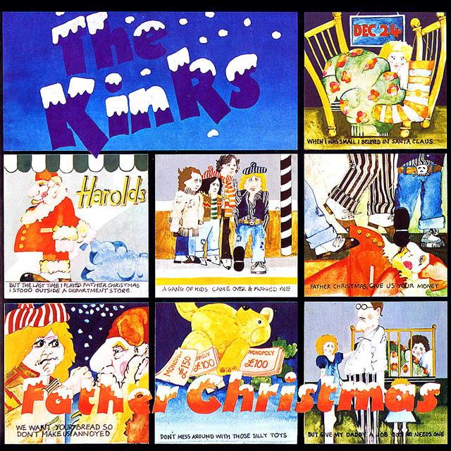

5 min read

Listen on Apple Music.
Much like Jackson Browne's “The Rebel Jesus,” this Christmas song from The Kinks is also focused on the needs of the poor. And although the children in this tale seem to come more from the Oliver Twist/Artful Dodger tradition than from “The Christmas Carol,” Dickens would still recognize their predicament and their motivations.
Unlike Browne's song, though, which is intended for a simple guitar and vocal delivery, The Kinks favor us here with a rock epic in which the music and the instrumentation are as important as the words.
The recording begins with some pleasant holiday bells, evoking a happy Christmas scene.
Rather demonic sounding drums and electric guitars soon appear, though, amping up the volume and changing the tone of the song.
Now the drums and guitars recede a bit, and singer/songwriter Ray Davies enters, delivering fond remembrances of his innocent childhood days celebrating Christmas with his family.
When I was small I believed in Santa Claus,
Though I knew it was my Dad.
And I would hang up my stocking at Christmas,
Open my presents and I'd be glad.
Now the music turns darker, and the scene becomes more threatening.
But the last time I played Father Christmas,
I stood outside a department store.
A gang of kids came over and mugged me
And knocked my reindeer to the floor.They said:
Father Christmas, give us some money!
Don't mess around with those silly toys.
We'll beat you up if you don't hand it over.
We want your bread so don't make us annoyed.
Give all the toys to the little rich boys.
Don't give my brother a Steve Austin outfit.
Don't give my sister a cuddly toy.
We don't want a jigsaw or Monopoly money,
We only want the real McCoy.Father Christmas, give us some money!
We'll beat you up if you make us annoyed.
Father Christmas, give us some money!
Don't mess around with those silly toys.
In ironic parody of the childhood holidays the singer remembers, these modern children aren't interested in toys, but in some ready cash, and are willing to resort to violence to obtain it.
But of course Davies and his bandmates have more on their minds than just complaining about modern youth.
But give my Daddy a job 'cause he needs one;
He's got lots of mouths to feed.
But if you've got one I'll have a machine gun,
So I can scare all the kids on the street.
Father Christmas, give us some money!
We got no time for your silly toys.
We'll beat you up if you don't hand it over,
We want your bread so don't make us annoyed.
Give all the toys to the little rich boys.
So now we understand the motivation of the threatening children and also see that, if they've grown up too fast, it's because they've had to.
Now the instruments amp up again, delivering what sounds at first like the song's last hurrah, before gradually fading out.
The Kinks aren't quite done yet though. Over the sustained feedback of one last power chord, Ray Davies now delivers a final verse, speaking as much as singing, and using the voice of the song's initial character, making sure that we won't miss the message implicit in the song's preceding drama.
Have yourself a merry merry Christmas.
Have yourself a good time.
But remember the kids who got nothin'
While you're drinkin' down your wine.
Guitars and drums amp up again, threatening to once again overwhelm us, but then suddenly give away to the pleasant bells with which the song started, now allowing the voices of the demanding children to be associated with these happier sounds.
Father Christmas, give us some money
We got no time for your silly toys
Father Christmas, please hand it over,
We'll beat you up so don't make us annoyed.Father Christmas, give us some money
Don't mess around with those silly toys
We'll beat you up if you don't hand it over
We want your bread so don't make us annoyed
Give all the toys to the little rich boys
Now the band finally delivers the noisy fade-out hinted at earlier, and the cut winds to a close.
There are so many things to love about this song:
Ray Davies' lead vocals, playing different characters and taking on different attitudes as the song proceeds;
the lovely holiday bells, delightful to listen to, yet also playing an important role in the song's construction;
brother Dave's chunky power chords and menacing lead guitar runs, driving the track along relentlessly;
Mick Avory's pounding drums, repeatedly bringing us to the verge of apocalypse;
the cunning structure of the song, defying usual conventions and repeatedly surprising and delighting us with unexpected bits;
and then, somehow, there is the sheer thrashing fun of hearing the entire band coming together on the chorus, playing and singing “Father Christmas! Give us some money! Don't mess around with those silly toys!”
The track is available from The Misfits album, or from Come Dancing With The Kinks, but the original cover of the single release was too good not to include at the top of this post.
Next: “Merry Christmas Baby”
Or see the complete list of Christmas Favorites from The Practical Utopian.